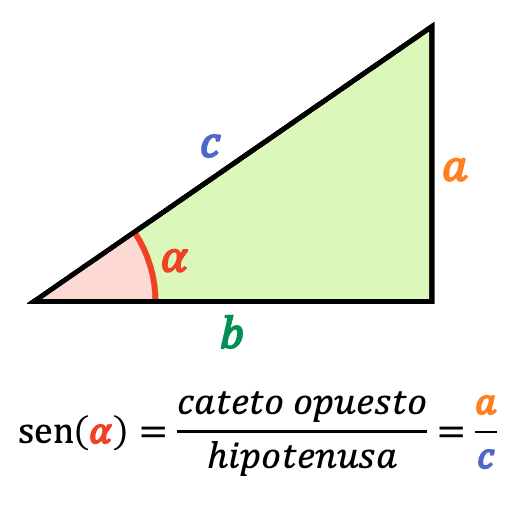
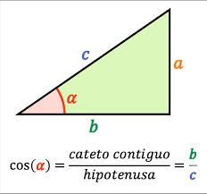
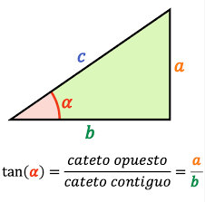
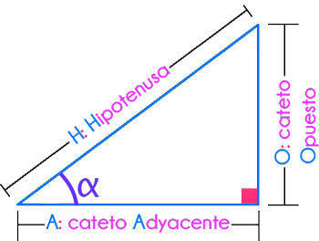

Tema
Conceptos básicos de seno, coseno y tangente.



Explicación
En un triángulo rectángulo, el seno, coseno y tangente se definen como razones entre los catetos y la hipotenusa. Estas relaciones son fundamentales en trigonometría y se aplican en física, arquitectura e ingeniería.


Ejemplo resuelto
Ejemplo de cómo calcular seno, coseno y tangente en un triángulo rectángulo:

Actividades
¿Qué es el seno de un ángulo en un triángulo rectángulo?
¿Qué es el coseno de un ángulo en un triángulo rectángulo?
¿Qué es la tangente de un ángulo en un triángulo rectángulo?
¿Cuál es el valor de sin(90°)?
En un triángulo rectángulo, la hipotenusa siempre es…